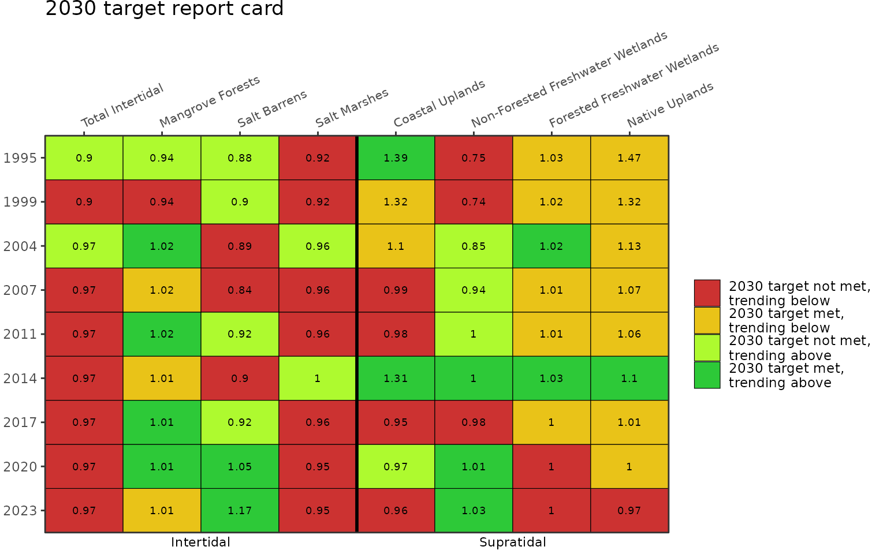
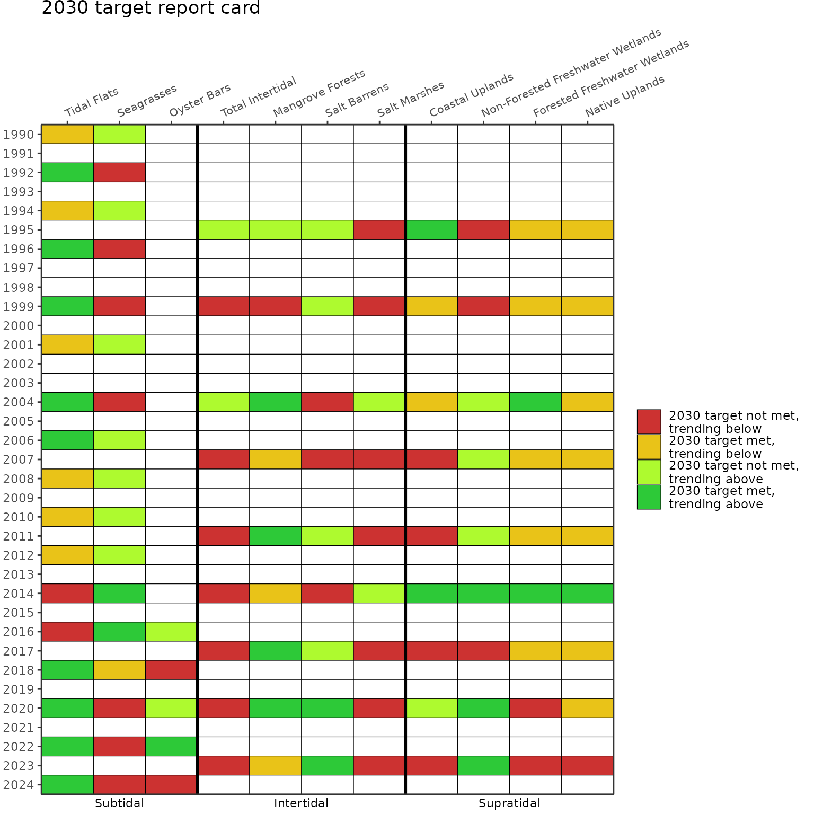
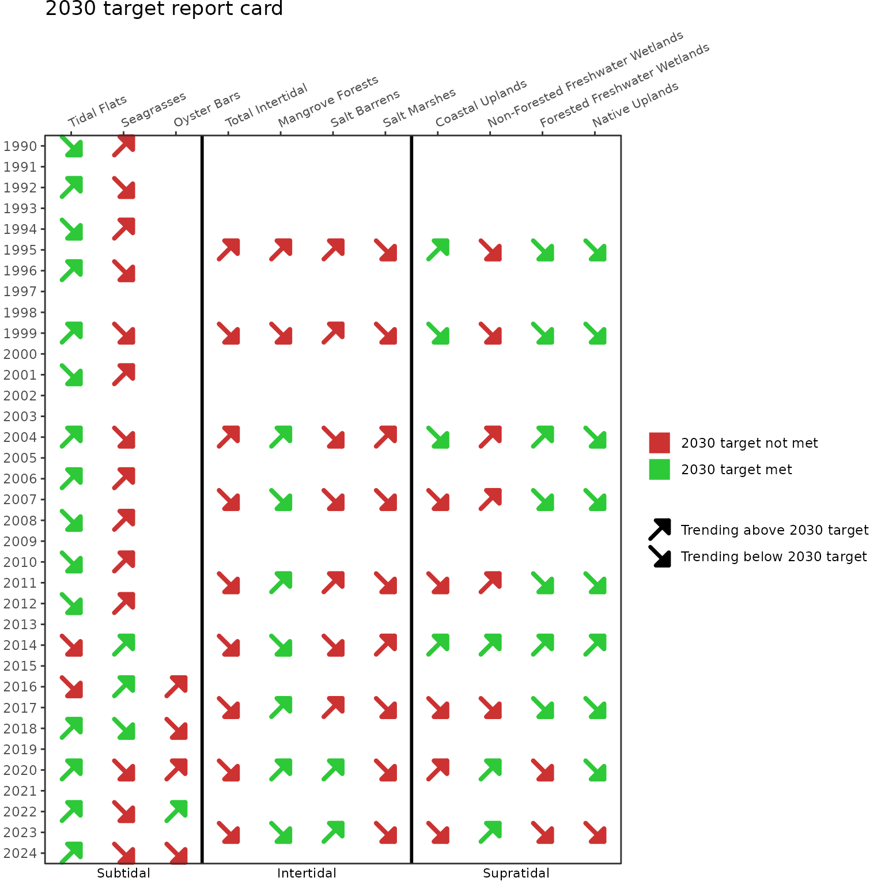

Background
Dashboard: https://shiny.tbep.org/landuse-change/
The habitats of Tampa Bay provide food, shelter, and other important services that support birds, fish, mammals, and invertebrates. Significant habitat alteration and loss has occurred with development activities. To address these challenges, the Habitat Master Plan (2020 Update) [1] provides a set of targets and goals that, if achieved, will provide a healthy and balanced coverage of native habitats in Tampa Bay and its watershed.
This update builds on the previous Habitat Master Plan [2] in several ways. The target and goal setting approach is informed by past changes and over forty years of habitat restoration experience in the region. The approach also identifies what is possible today rather than replicating past ecological conditions and accounts for the potential future effects of sea-level rise, climate change, and development. The Habitat Master Plan defines 10-year (2030) habitat protection and restoration targets and 30-year (2050) goals. Maps of habitat protection and restoration opportunity areas where these targets and goals can be attained are additional products available under the new plan. Please visit https://tbep.org/habitat-master-plan-update/ for additional information.
Datasets
Three internal datasets in tbeptools provide the necessary information to create the Habitat Master Plan report card.
-
Summary of annual acreage estimates for each major habitat type in intertidal and supratidal strata.
acres #> # A tibble: 90 × 3 #> # Groups: name [9] #> name HMPU_TARGETS Acres #> <chr> <chr> <dbl> #> 1 1990 Coastal Uplands 5078. #> 2 1990 Developed 372438. #> 3 1990 Forested Freshwater Wetlands 159561. #> 4 1990 Mangrove Forests 13522. #> 5 1990 Native Uplands 229990. #> 6 1990 Non-Forested Freshwater Wetlands 54454. #> 7 1990 Open Water 38357. #> 8 1990 Restorable 571513. #> 9 1990 Salt Barrens 468 #> 10 1990 Salt Marshes 4482. #> # ℹ 80 more rows -
Summary of annual acreage estimates for each major habitat type in the subtidal stratam.
subtacres #> # A tibble: 65 × 3 #> name HMPU_TARGETS Acres #> <chr> <chr> <dbl> #> 1 1988 Open Water 197802. #> 2 1988 Restorable 72.9 #> 3 1988 Seagrasses 23279. #> 4 1988 Tidal Flats 21686. #> 5 1990 Open Water 197058. #> 6 1990 Restorable 67.0 #> 7 1990 Seagrasses 25218. #> 8 1990 Tidal Flats 20433. #> 9 1992 Open Water 195908. #> 10 1992 Restorable 86.0 #> # ℹ 55 more rows -
A table of targets and goals for each major habitat type, developed in the Habitat Master Plan 2020 update [1] (only select columns shown).
hmptrgs[, c("Category", "HMPU_TARGETS", "Target2030", "Goal2050")] #> Category HMPU_TARGETS Target2030 Goal2050 #> 1 Subtidal Hard Bottom 423.0 423.0 #> 2 Subtidal Artificial Reefs 166.0 166.0 #> 3 Subtidal Tidal Flats 16220.0 16220.0 #> 4 Subtidal Seagrasses 40000.0 40000.0 #> 5 Subtidal Oyster Bars 221.0 471.0 #> 6 Intertidal Living Shorelines 21.3 56.3 #> 7 Intertidal Total Intertidal 21353.0 23803.0 #> 8 Intertidal Mangrove Forests 15300.0 15300.0 #> 9 Intertidal Salt Barrens 546.0 796.0 #> 10 Intertidal Salt Marshes 4807.0 5457.0 #> 11 Intertidal Tidal Tributaries 4.0 18.0 #> 12 Supratidal Coastal Uplands 3769.0 4219.0 #> 13 Supratidal Non-Forested Freshwater Wetlands 68937.0 71787.0 #> 14 Supratidal Forested Freshwater Wetlands 152282.0 152732.0 #> 15 Supratidal Native Uplands 141050.0 142100.0
These datasets are created in the repository https://github.com/tbep-tech/hmpu-workflow and require updates as land use and cover datasets are produced every two to three years by the Southwest Florida Water Management District.
Report card summary
An important reporting product for the Habitat Master Plan is a
report card that summarizes attainment of targets and goals and
evaluates prior trends to identify if coverages are trending above or
below the targets or goals. Two functions are provided in tbeptools to
create this report card. The anlz_hmpreport() summarizes
the above datasets to provide the necessary information for creating the
report card. The show_hmpreport() generates the plot for
the report card. The latter can be used by itself and the former is only
provided if there is a need to view the data behind the report card.
Using the anlz_hmpreport() function summarizes the
acreage coverage estimates for each habitat type, compares them to the
targets and goals for each year of data, and assesses the coverage trend
between year pairs to determine if the changes are trending above or
below the targets and goals.
anlz_hmpreport(acres = acres, subtacres = subtacres, hmptrgs = hmptrgs)
#> # A tibble: 150 × 17
#> year metric Acres lacres lyr category Target Goal acresdiff yeardiff
#> <dbl> <chr> <dbl> <dbl> <dbl> <fct> <dbl> <dbl> <dbl> <dbl>
#> 1 1990 Seagrasses 25218. 23279. 1988 Subtidal 40000 40000 1939. 2
#> 2 1990 Tidal Fla… 20433. 21686. 1988 Subtidal 16220 16220 -1253. 2
#> 3 1992 Seagrasses 25746. 25218. 1990 Subtidal 40000 40000 528. 2
#> 4 1992 Tidal Fla… 20594. 20433. 1990 Subtidal 16220 16220 161. 2
#> 5 1994 Seagrasses 26524. 25746. 1992 Subtidal 40000 40000 778. 2
#> 6 1994 Tidal Fla… 20244. 20594. 1992 Subtidal 16220 16220 -349. 2
#> 7 1996 Seagrasses 26924. 26524. 1994 Subtidal 40000 40000 400. 2
#> 8 1996 Tidal Fla… 20443. 20244. 1994 Subtidal 16220 16220 199. 2
#> 9 1999 Seagrasses 24840. 26924. 1996 Subtidal 40000 40000 -2083. 3
#> 10 1999 Tidal Fla… 27085. 20443. 1996 Subtidal 16220 16220 6642. 3
#> # ℹ 140 more rows
#> # ℹ 7 more variables: changerate <dbl>, targetrate <dbl>, goalrate <dbl>,
#> # targetprop <dbl>, goalprop <dbl>, targeteval <dbl>, goaleval <dbl>The columns are as follows:
- year: Year of the assessment
- metric: Habitat type assessed
- Acres: Coverage estimate for the year
- lacres: Coverage estimate for the previous set of available data
- lyr: Year for the previous set of available data
- category: Strata for the habitat type
- Target: 2030 target for the habitat type from the Habitat Master Plan
- Goal: 2050 goal for the habitat type from the Habitat Master Plan
- acresdiff: Difference in acres for the current year and the previous set of available data
- yeardiff: Difference in years for the current year and the previous set of available data
- changerate: Acreage change per year for the current year relative to the previous set of available data
- targetrate: Annual rate required to achieve the 2030 target
- goalrate: Annual rate required to achieve the 2050 goal
- targetprop: Proportion of target met for the current year
- goalprop: Proportion of goal met for the current year
- targeteval: A number indicating target status of the current year for the report card
- goaleval: A number indicating goal status of the current year for the report card
The important columns in the output are targetprop,
goalprop, targeteval, and
goaleval. The targetprop and
goalprop columns indicate the proportion of the target or
goal met for habitat type in the current assessment year. The
targeteval and goaleval columns are one of
four values, as -1, 0, 0.5, and 1, for each habitat type and year. These
numbers define the habitat status for the assessment year:
- -1: target or goal not met, trending below
- 0: target or goal met, trending below
- 0.5: target or goal not met, trending above
- 1: target or goal met, trending above
Report card plot
The show_hmpreport() can be used to create the Habitat
Master Plan report card. The anlz_hmpreport() function is
used internally and does not need to be used separately. The input files
are the same.
The plot below shows the report card for the 2030 targets, using
typ = "targets". The colors of each cell correspond to the
numbers in the targeteval column (or goaleval
if typ = "goals") returned by
anlz_hmpreport(). The numbers in each cell indicate the
proportion of the target from targetprop (or goal from
goalprop if typ = "goals") that is met for
each habitat type in each assessment year. Note that the creation of
datasets to generate the summaries is not continuous each year and
varies between the subtidal and inter/supratidal habitat.
show_hmpreport(acres = acres, subtacres = subtacres, hmptrgs = hmptrgs, typ = 'targets')
The 2050 goals report card can be shown using
typ = "goals".
show_hmpreport(acres = acres, subtacres = subtacres, hmptrgs = hmptrgs, typ = 'goals')
The subtidal data in subtacres and the inter/supratidal
data in acres are provided as different datasets by the
Southwest Florida Water Management District. The years in each dataset
typically do not match and each dataset is collected at approximate 2 to
3 year intervals. By default, year on the y-axis is shown as a
continuous variable, where gaps are shown in years when each dataset was
unavailable. Use ycollapse = TRUE to remove years without
data.
show_hmpreport(acres = acres, subtacres = subtacres, hmptrgs = hmptrgs, typ = 'targets', ycollapse = T)
Different strata can also be selected using the strata
argument. Note the use of ycollapse = T to remove years
without data.
show_hmpreport(acres = acres, subtacres = subtacres, hmptrgs = hmptrgs, typ = 'targets',
strata = c('Intertidal', 'Supratidal'), ycollapse = T)
All strata can be combined in a single plot with collapsed years using the patchwork library.
library(patchwork)
library(ggplot2)
p1 <- show_hmpreport(acres = acres, subtacres = subtacres, hmptrgs = hmptrgs, typ = 'targets',
strata = 'Subtidal', ycollapse = T)
p2 <- show_hmpreport(acres = acres, subtacres = subtacres, hmptrgs = hmptrgs, typ = 'targets',
strata = c('Intertidal', 'Supratidal'), ycollapse = T) + labs(title = NULL)
p1 + p2 + plot_layout(ncol = 2, guides = 'collect')
The text showing the proportion of the target or goal met each year
can be suppressed using text = NULL. The size of the text
can be changed by entering a numeric value (default
text = 2.5).
show_hmpreport(acres = acres, subtacres = subtacres, hmptrgs = hmptrgs, typ = 'targets', text = NULL)
An alternative form of the report card can be returned where the
attainment of targets or goals and the likelihood of attainment are
shown differently using colors and shapes, respectively. This is plotted
using twocol = T, where red shows the target or goal is not
met, green shows the target or goal is met, an up arrow shows the target
or goal is likely to be met, and a down arrow shows the target or goal
is not likely to be met.
show_hmpreport(acres = acres, subtacres = subtacres, hmptrgs = hmptrgs, typ = 'targets', twocol = T)
The report card provides no information on artificial reefs, living shorelines, and hard bottom habitats. These habitats are not assessed in routine data products from the Southwest Florida Water Management District, although targets and goals are provided in the Habitat Master Plan.